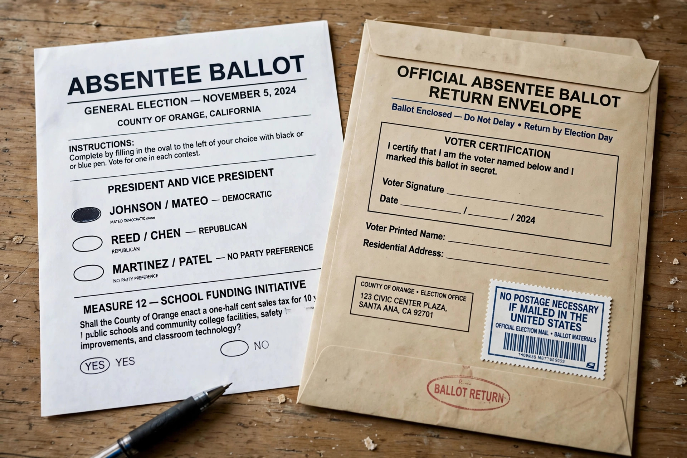

An absentee ballot is a vote cast by someone who is unable or unwilling to attend an official polling station to which the voter is normally allocated. Numerous countries provide absentee voting as a way to increase participation and to accommodate voters who are away from home, ill, disabled, working, or serving in the armed forces on election day.
Absentee voting differs from early voting, in which the voter attends a polling place in person before election day, although the terms are sometimes used interchangeably in the United States.
Absentee voting in the United States began on a large scale during the Civil War, when states arranged for Union soldiers in the field to vote. It expanded during the 20th century to voters absent from their home county, and later to those with illness or disability. Beginning in the 1970s and 1980s, states progressively dropped the requirement to state an excuse; today most states offer "no-excuse" absentee voting to any registered voter who requests a ballot, and several states conduct elections primarily by mail — see voting by mail in the United States. Members of the military and citizens living overseas are covered by the Uniformed and Overseas Citizens Absentee Voting Act of 1986.
Absentee ballots raise questions absent from polling-place voting: verifying the voter's identity (usually by signature matching), the risk of ballots being lost or delayed in the post, family or employer coercion outside the secret polling booth, and differing state deadlines for when ballots must be received to be counted. Election researchers generally find fraud in absentee voting to be rare but somewhat more common than in-person impersonation, and safeguards vary widely between jurisdictions.
Voting by mail in the United States · Election day · Ballot box